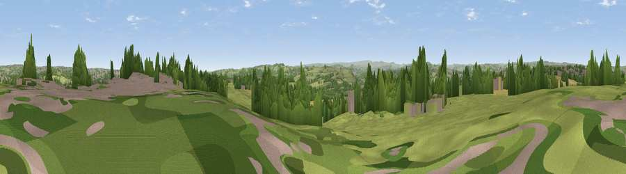

Viewpoint near Hartshead
#13926 in England · top 18% of its area beats it · near HartsheadWhere it is
The exact computed spot (SE 18875 22725). Click the marker for map links.
The view, rendered

A 360° render of this exact spot computed from the terrain model, tree cover and land cover — summer colours, afternoon light, calibrated against photographs of famous viewpoints. Real trees, hedges and buildings will differ in detail.
The panorama
Grey silhouette: terrain skyline in each direction (720 bearings, Earth curvature and refraction included). Dashed green: skyline with trees (+15 m) and buildings (+8 m) as obstacles. Blue strip: how far the ground is visible on each bearing.
Where the view opens
Wedge length = distance to the farthest visible ground on that bearing (vegetation-aware). Rings at 10, 25 and 50 km.
What fills the view
44% grassland · 27% woodland · 18% built-up · 11% cropland
Angular shares of the visible panorama (visual magnitude), not map area. Landscape diversity 0.56 (0–1 Shannon).
Key numbers
More beautiful places nearby
The staircase of upgrades: each row has a higher view potential than everything closer. Driving times are estimates from straight-line distance, calibrated against real road routing — check an actual route before setting out.
| Place | Direction | Drive | Score |
|---|---|---|---|
| Viewpoint near Kirkheaton | S · 4 km | ~9 min | 68.0 |
| Viewpoint near Grange Moor | SSE · 8 km | ~16 min | 69.8 |
| Castle Hill | SSW · 9 km | ~18 min | 70.2 |
| Viewpoint near Stump Cross | WNW · 11 km | ~21 min | 71.5 |
| Viewpoint near Jackson Bridge | S · 16 km | ~28 min | 73.5 |
| Viewpoint near Otley | N · 22 km | ~36 min | 77.5 |
| Darwen Hill | W · 51 km | ~72 min | 80.7 |
| White Brow | W · 54 km | ~75 min | 82.9 |
53.70062, -1.71558 · source: screening · position refined by local search. Computed location — check access rights before visiting.